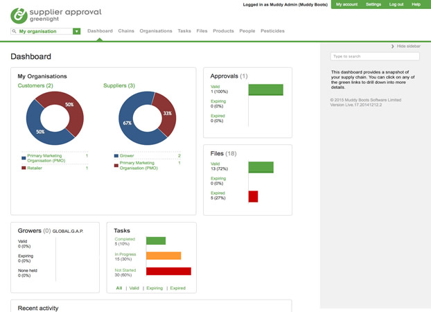
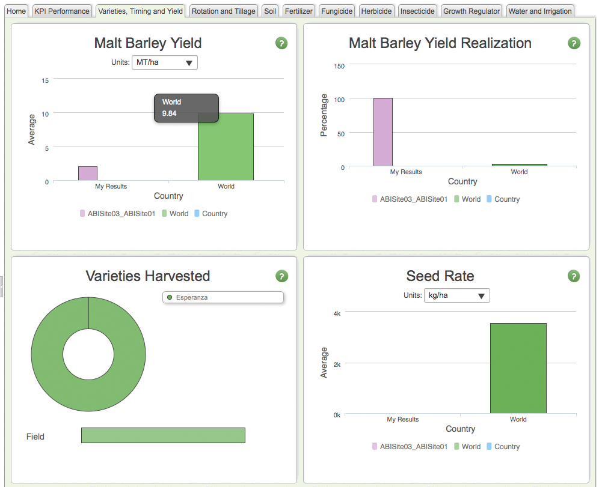

The Dashboard is the first page the user sees after logging in. This will often show charts and data highlighted from the rest of the site.

The logi charts should be on a white background.
Consider using the light green to break up a page area, useful for filters and widgets in the right hand column but also for tabs.
A 1 pixel green outline helps to seperate the light green from the white.
The charts should use the core colours from the palette (listed below and in the colour page)
Colour legends should be square with a minimum width of 16pixels.
Where there are lots of charts to display consider using tabs and/or display charts side by side. See example below.
